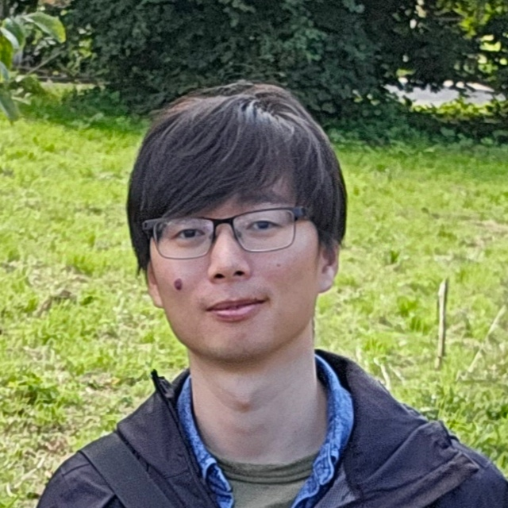

Welcome
欢迎
Welcome to my academic personal page. I am a Research Associate at King's College London. My research focuses on Nanoplasmonics with a keen interest in chiral photonics and heterogeneous nanostructures. Feel free to explore my work and connect!
Recent Publications
近期出版物
-
Yuanyang Xie, Alexey V. Krasavin, Diane J. Roth, Anatoly V. Zayats. "Unidirectional Chiral Scattering from Single Enantiomeric Plasmonic Plasmonic Nanoparticles." Nature Communications, 2025, 16(1):1125. [PDF]
-
Anton Yu. Bykov, Yuanyang Xie, Alexey V. Krasavin†, Anatoly V. Zayats. "Broadband Transient Response and Wavelength-Tunable Photoacoustics in Plasmonic Hetero-nanoparticles." Nano Letters, 2023, 23(7):2786-2791. [PDF]
-
Yuanyang Xie, Yu Huang, Jiye Li, Jiangling Wu. "A Trigger-based Aggregation of Aptamer-functionalized Gold nanoparticles for Colorimetry: An Example on Detection of Escherichia Coli O157: H7." Sensors and Actuators B: Chemical, 2021, 339: 129865. [PDF]
-
Yuanyang Xie, Yu Huang, Dongyun Tang, Hongliang Cui, Lizhu Yang, Haiyan Cao, Wen Yun. "Sensitive Colorimetric Detection for Lysozyme Based on the Capture of A Fixed Thiol-aptamer on Gold Nanoparticles." New Journal of Chemistry, 2019, 43(11): 4531-4538. [PDF]
-
Yuanyang Xie, Yu Huang, Dongyun Tang, Hongliang Cui, Haiyan Cao. "A Competitive Colorimetric Chloramphenicol Assay Based on The Non-cross-linking Deaggregation of Gold Nanoparticles Coated with A Polyadenine-modified Aptamer." Microchimica Acta, 2018, 185: 1-9. [PDF]
For a complete list, please visit the Publications section.
Contact
联系方式
I am always open to discussing new research ideas or potential collaborations. Please feel free to reach out to me through the following channels:
Email: yuanyang.xie@kcl.ac.uk
Office: Department of Physics, King's College London, London, WC2R 2LS, United Kingdom
Connect with me on: Google Scholar LinkedIn
I aim to respond to emails within 2-3 business days.